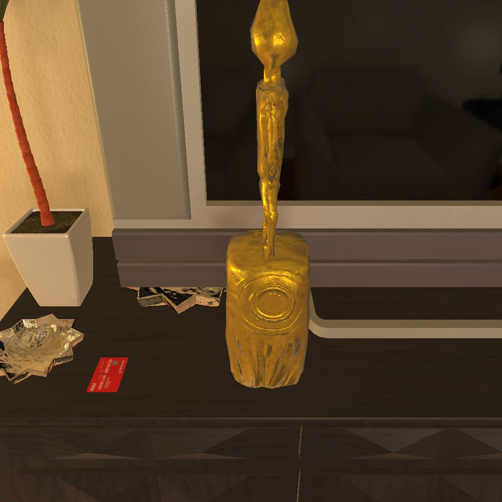

---------------------------------------------------------task: 7---------------------------------------------------------
--------------------------------------------------------------------------------------------------------------------------------------------------------------------
--------------------------------------------------------------------------------------------------------------------------------------------------------------------
Step:--------------------------------------------------------------------------15-------------------------------------------------------------------------------
----------------------------------------
VLM Prompt:
Image1:
Image2:
**Instruction**
1. Analyze the provided images to identify all visible household objects and compare the difference between images (e.h. whether the object is opened or not and taken on hand or not), focusing on those relevant to the task description "put a creditcard in coffeetable."
2. Use the analysis of images and the task hint "The agent must find an object of the desired type, pick it up, find the correct location to place it, and put it down there." to answer the question: what is the most reasonable action in the choices for the task description "put a creditcard in coffeetable"?
3. Decide and write the answer using the template: The answer is: (i): , where i is the real number. If there is no desired object in images, search every place based on **Initial Observation** to find the object. And if no one is exactly correct, choose a similar answer.
**Initial Observation**
You are in the middle of a room. Looking quickly around you, you can see armchair (1-2), dresser (1), garbagecan (1), cabinet (1-4), drawer (1-4), coffeetable (1), sidetable (1), sofa (1)
**Answer Choices**
(1): go to armchair 1
(2): go to armchair 2
(3): go to dresser 1
(4): go to garbagecan 1
(5): go to cabinet 1
(6): go to drawer 2
(7): go to cabinet 2
(8): go to drawer 3
(9): go to cabinet 3
(10): go to drawer 4
(11): go to cabinet 4
(12): go to coffeetable 1
(13): go to sofa 1
(14): take creditcard 2 from sidetable 1
(15): examine sidetable 1
**Answer**
Let's think step by step by following the instructions.
----------------------------------------
----------------------------------------
Original Response:
1. In Image 1, we see a credit card on the floor near the window and a golden statue. In Image 2, we see a credit card on the sidetable next to a lamp and a couch. These are the objects relevant to our task, "put a creditcard in coffeetable."
2. Based on the images and task hint, we need to find a credit card, pick it up, and place it on the coffeetable. From Image 2, we can see a credit card already on the sidetable, which is the object we need for our task.
3. Using the template provided, the most reasonable action for the task "put a creditcard in coffeetable" is:
The answer is: (14): take creditcard 2 from sidetable 1.
This action allows us to pick up the credit card that is already visible in the image, which we can then put on the coffeetable as per the task description.
----------------------------------------
----------------------------------------
>>> Refine Original VLM Response and Get Pure Action: take creditcard 2 from sidetable 1
----------------------------------------
-----------------------------------------------------------------
Running time: 20.650346755981445 seconds
Total Money: 2.948740000000001
-----------------------------------------------------------------
-----------------------------------------------------------------
Text Observation:You pick up the creditcard 2 from the sidetable 1.
-----------------------------------------------------------------
UNSUCCEED